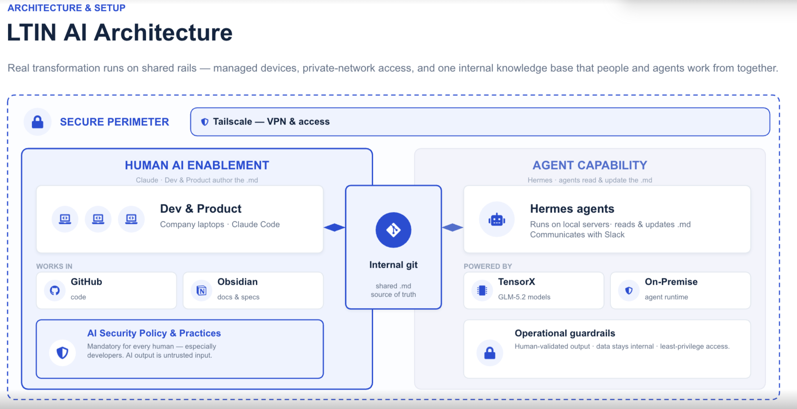

One isolated, governed brain per client — Zilliqa, an asset manager, any brand — that all ~100 Solstice agents read, write, and stay in voice with. The pattern Solstice already runs internally, turned into a product.
One brain per clientIsolated by constructionSits on TensorX — doesn't replace it
r3to.OSSolsticeTensorXApexE3
The proof
This is already how Solstice works
Humans author one shared knowledge base; agents read & update it; a sovereign perimeter and guardrails keep every output internal and human-validated.

Solstice's internal AI architecture — running today
Shared .md source of truth in internal git — the one knowledge base
Pick a client and the whole session scopes to it — memory, voice, guardrails, enabled agents. One brand's brain can never surface in another's context.
Public Sector
Sovereign services · plain-language, citizen-facing
factslessonsvoiceguardrails
Zilliqa
Web3 infrastructure · builder-community tone
factslessonsvoiceguardrails
EU Asset Mgr
Regulated finance · formal, compliance-bound
factslessonsvoiceguardrails
Manufacturing
Industrial ops · plain, shop-floor-ready
factslessonsvoiceguardrails
user · world · client · project · chat
Isolation is the scope model — not a filter you can turn off. Personal stays private; Agency/World is the shared base beneath every client.
r3to.OS × Solstice06 / 11
Capability
100 agents → domain packs on one brain
Your agents stop being disconnected bots. They become governed specialists — all reading and writing the same per-client brain.
Each lane carries its own rules + skills + specialist sub-agents — layered on top of the active client's voice.
All bound to one client brain
Recall from & write back to the same scoped facts
Speak in that client's voice, every lane
Bound by that client's guardrails
Can't see another client's data
A SecOps pack and a Marketing pack, both reading the same client brain — neither leaking into the next client.
r3to.OS × Solstice07 / 11
Why Europe buys it
Sovereign by construction, not by policy
For EU asset managers and manufacturers, data protection is the deal. r3to.OS makes isolation a property of the data model — something you can put on a slide, not a config you hope holds.
Isolation by construction
The scope model means one brand's brain can't surface in another's context. Not a toggle — how the data works.
Data stays internal
Local-first on device; each brain syncs only to that client's own private repo. Nothing pools in a shared cloud.
Human-validated · least-privilege
Plan-approval, write guards and tone guard keep output reviewed and access minimal — your existing guardrail language.
Runs on sovereign compute
Layers onto TensorX sovereign GPUs / on-prem runtime. The governance sits where the data already lives.
The GDPR & sovereignty story you already sell — now with a per-client memory guarantee08 / 11
Fit
It sits on top of what you already sell
r3to.OS doesn't compete with your stack — it completes it. The governed operating layer above the sovereign foundation.